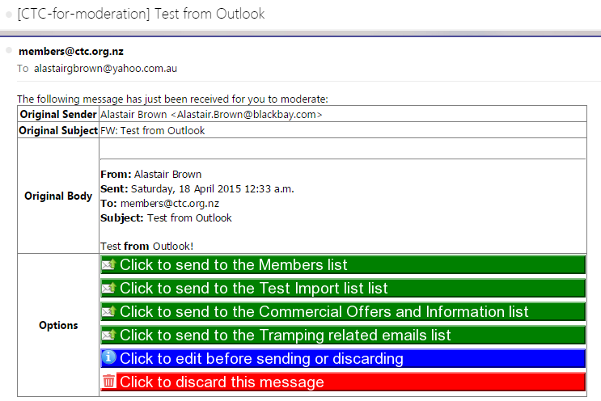
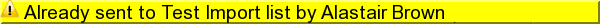
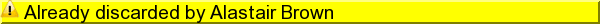
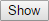
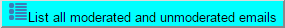

CTC email moderation
Options
Send to {{data.listname}} list
in
{{data.config.ActionDelay}}
seconds
{{data.stop ? 'Countdown stopped' : 'Stop countdown'}}
Edit this message before sending
Action
{{data.captionweb}}
{{folder.name}} Emails
Subject
From
Date
State
{{email.subject}}
{{email.from}}
{{email.date}}
{{email.ctcaction}}
Message Subject
{{data.subject}}
Message Body
Options
Send to {{list.listname}} list
Discard this message
Undo the discard and edit this message
Retry sending this message
List all moderated and unmoderated emails
Raw
{{data.showraw ? 'Hide' : 'Show'}}
Help
{{data.showhelp ? 'Hide' : 'Show'}}
Edited message
Raw message text
{{data.raw}}
Email Moderation Process
The email moderation process is designed to work as follows:
An email is sent to
{{data.config.SrcName}}@{{data.config.SrcDomain}}
It arrives in the inbox folder for
{{data.config.SrcName}}@{{data.config.SrcDomain}}
The first step of the moderation process is that it a moderation email is sent all moderators
(CTC members who have the role of
{{data.config.ModeratorRoleName}}
- set up in
{{data.livesite}}/db/index.php/ctc/manageRoles
)
The moderation email is in this format:

One of the moderators will select one of the options in the email
If a "Click to send" option is selected then the moderator is presented with a screen that gives them {{data.config.ActionDelay}} seconds
to change that decision before the email is sent to all members on the selected list, via MailChimp.
If a "Click to edit" option is selected then the moderator can edit the message before selecting a list, or discarding the message.
If a "Click to discard" option is selected then the message is discarded, however this can be undone.
Please note:
If a another moderator has already moderated the message, then the email options will appear as follows:

or

If raw email data is understood it may help confirm (or otherwise) the legitimacy of an email for moderation.
Clicking on the  button after the
Raw
will show the raw email data.
Moderated and Unmoderated messages may be viewed by clicking on .
Alternative access is via this link:
{{data.formaction}}?action=list
although you must be logged on to the CTC website for this to work.